في كل صباح، كانت الشمس تشرق بلطف، وتغرد العصافير فوق الأشجار. يستعد الأطفال للذهاب إلى المدرسة، ويحملون حقائبهم الملوّنة.
ومن بينهم كانت ليلى، طفلة صغيرة ذات ابتسامة جميلة. لكنها لم تكن تحب الذهاب إلى المدرسة، وكانت تتمنى لو تستطيع البقاء في البيت واللعب طوال اليوم!
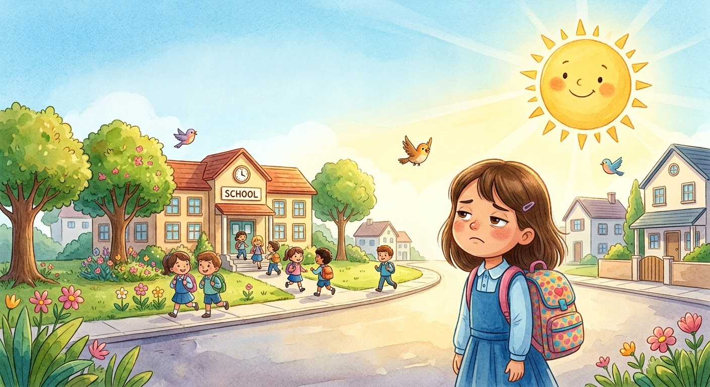
في كل ليلة، قبل أن تنام، كانت ليلى تقول لنفسها:
«ليتني أمرض قليلًا غدًا، حتى أبقى في البيت ولا أذهب إلى المدرسة!»
لم تكن ليلى تعرف أن المرض قد يجعلها تشعر بالألم والتعب، وأن الصحة نعمة ثمينة تستحق الشكر كل يوم.
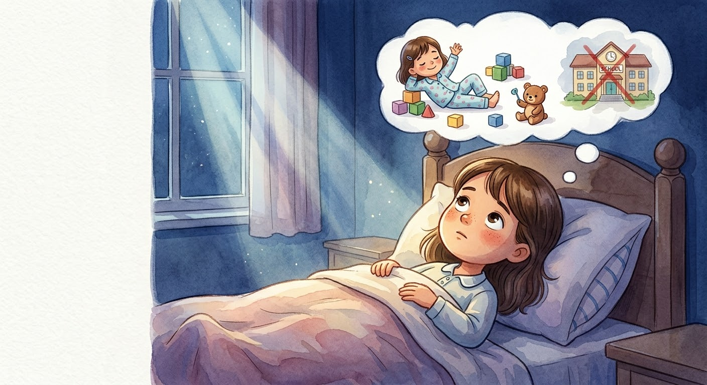
في صباح بارد، استيقظت ليلى وبدأت تستعد للمدرسة كعادتها.
وبينما كانت ترتدي حذاءها، شعرت فجأة بألم شديد في بطنها.
وضعت يدها الصغيرة على بطنها وهمست: «آه! ما هذا الألم؟»
حاولت الوقوف، لكن الألم ازداد، فلم تستطع إكمال استعدادها.
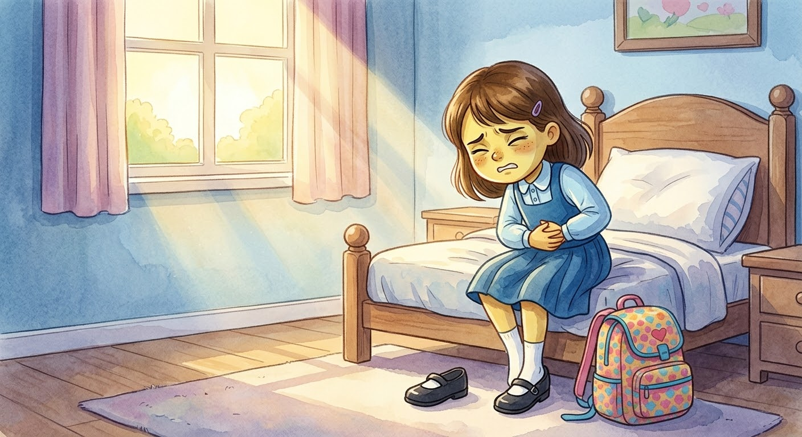
نادَت ليلى بصوت مرتجف:
«ماما! تعالي بسرعة، بطني تؤلمني كثيرًا!»
أسرعت أمها إلى الغرفة، وجلست بجانبها واحتضنتها برفق.
قالت الأم بحنان: «أنا هنا يا حبيبتي. لا تخافي، سنطلب المساعدة.» مسحت دموع ليلى وساعدتها.
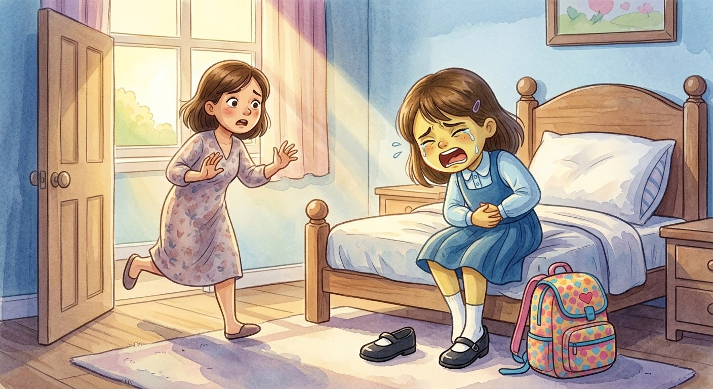
أخذت الأم ليلى إلى المستشفى لتعرف سبب الألم.
وفي الطريق، أمسكت بيد ابنتها، وراحت تطمئنها وتدعو الله أن يمنّ عليها بالشفاء.
قالت لها: «سنعتني بكِ يا ليلى، وسيقوم الأطباء بفحصكِ ومساعدتكِ.»
شعرت ليلى ببعض الطمأنينة، لأنها لم تكن وحدها.
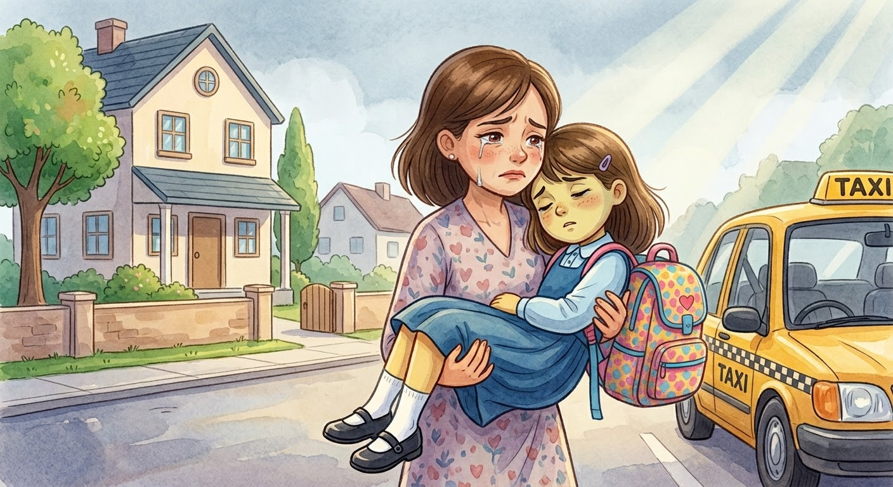
في المستشفى، استقبل الطبيب ليلى بابتسامة لطيفة.
سألها عن ألمها، ثم فحصها بعناية باستخدام سماعته الطبية، بينما كانت أمها تمسك بيدها.
قال الطبيب: «أحسنتِ يا ليلى! لقد كنتِ شجاعة. سنساعدكِ حتى تشعري بتحسن.»
شعرت ليلى بالراحة عندما عرفت أن هناك من يعتني بها.
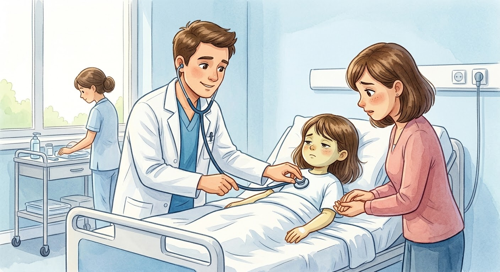
بعد الفحص، أخبر الطبيب الأم أن ليلى تحتاج إلى البقاء في المستشفى بضعة أيام لتلقي العلاج.
لم تكن ليلى سعيدة؛ فقد اشتاقت إلى غرفتها وألعابها.
قالت بحزن: «أريد العودة إلى البيت يا ماما.»
احتضنتها أمها وقالت: «أعرف يا حبيبتي، وسنعود عندما يسمح الطبيب بذلك.»
مرّت الأيام ببطء، وكانت ليلى تتناول دواءها وتتبع تعليمات الطبيب.
وفي أحد الأيام، تذكرت أمنيتها القديمة، وفكرت بحزن:
«كنت أتمنى أن أمرض حتى لا أذهب إلى المدرسة، لكنني لم أعرف كم يمكن أن يكون المرض متعبًا!»
ثم قالت: «أتمنى أن أتعافى قريبًا لأشكر الله على صحتي.»
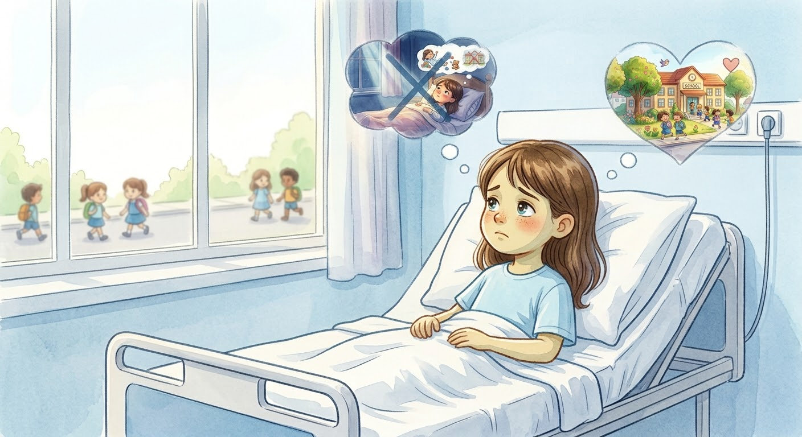
لم تكن ليلى وحدها في المستشفى.
كانت أمها تجلس بجانبها، وكان أبوها يزورها ويحكي لها قصصًا ممتعة.
أحيانًا كانوا يضحكون معًا، وأحيانًا كانت ليلى تستريح بين ذراعي أمها.
شعرت ليلى بالحب والدفء، وعرفت أن وجود العائلة بجانبنا يجعل الأيام الصعبة أسهل.
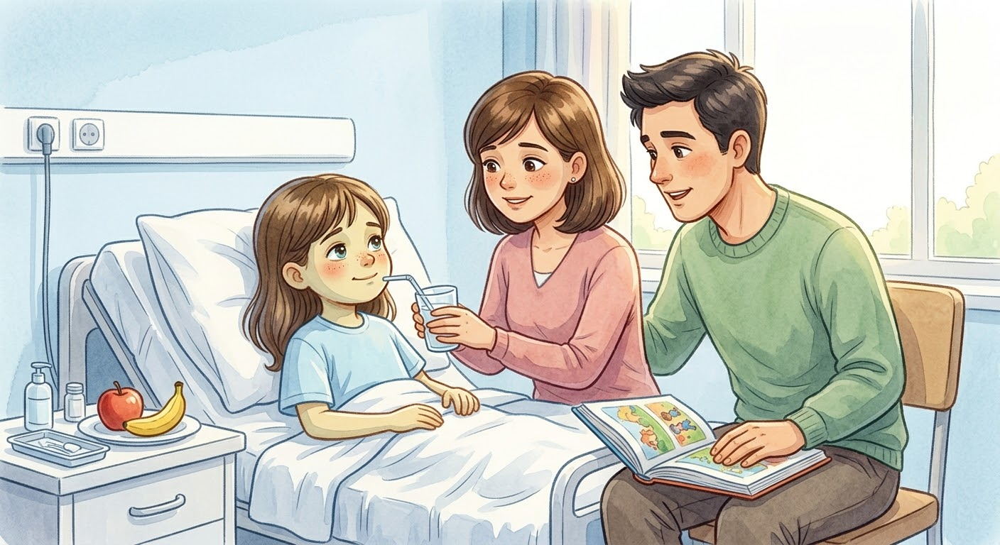
وفي يوم جميل، زار أصدقاء ليلى من المدرسة.
أحضروا معها بطاقات ملونة، وورودًا جميلة، وهدية صغيرة.
فرحت ليلى كثيرًا، وقالت: «كم أنا سعيدة لأنكم جئتم لزيارتي! اشتقت إليكم.»
ابتسم أصدقاؤها وقالوا: «نتمنى أن تتعافي سريعًا وتعودي للعب معنا!»
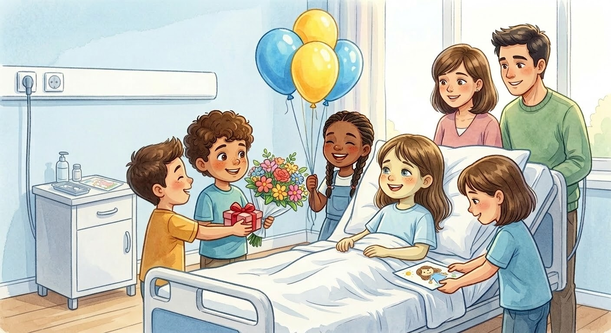
بفضل الله، ومع العلاج واهتمام أسرتها، بدأت ليلى تشعر بتحسن يومًا بعد يوم.
عاد إليها نشاطها تدريجيًا، وأصبحت تبتسم أكثر.
قال الطبيب: «أنتِ تتحسنين يا ليلى، وسنخبركِ عندما يحين وقت العودة إلى البيت.»
فرحت ليلى وقالت: «الحمد لله على نعمة الصحة! سأحافظ عليها دائمًا.»
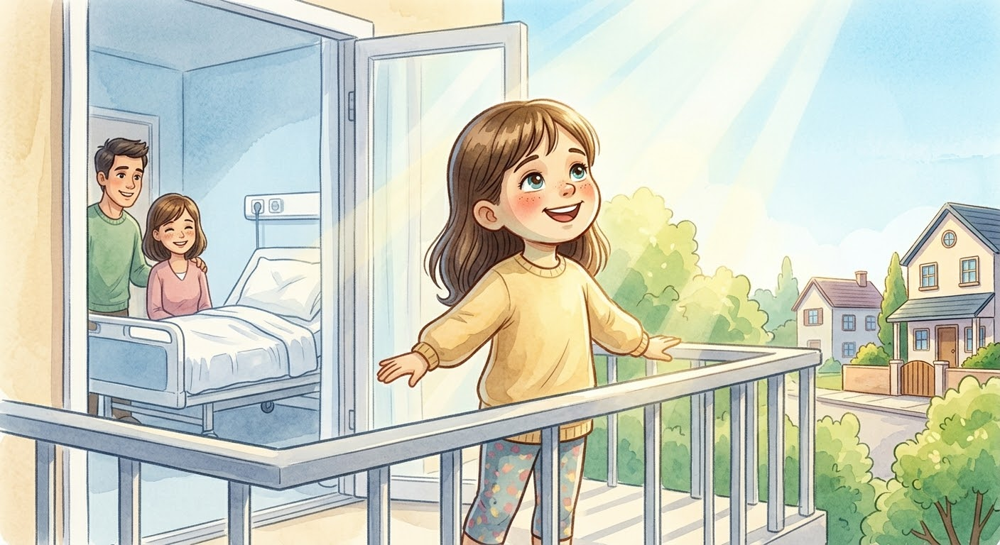
وأخيرًا، جاء اليوم الذي عادت فيه ليلى إلى بيتها!
وبعد أن تعافت، استيقظت في أول يوم لها بالمدرسة، وارتدت ملابسها وحملت حقيبتها الملونة بابتسامة جميلة.
جلست مع أمها، وأخبرتها بما كان يزعجها في المدرسة، واتفقا على حلّ تلك الأمور معًا.
ثم خرجت ليلى وهي تقول بسعادة: «الحمد لله على نعمة الصحة والعافية!» 👧💗
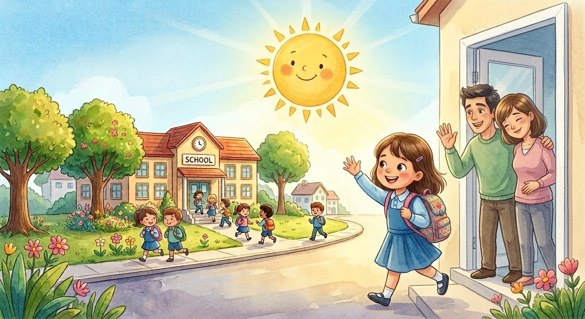